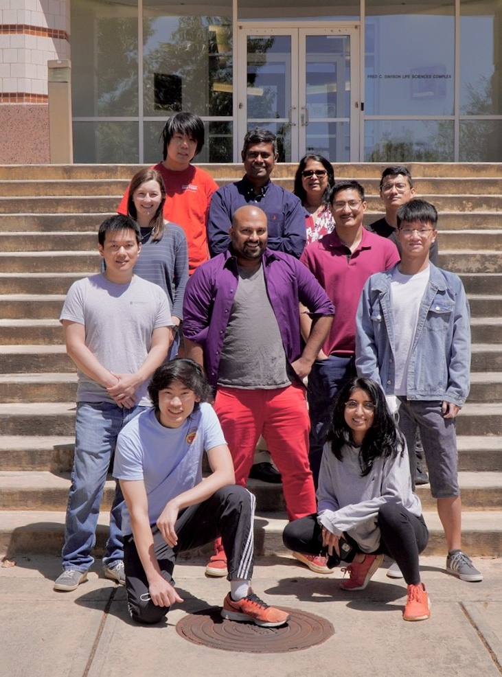

ESBG
EVOLUTIONARY SYSTEMS BIOLOGY LAB
Kannan Lab
Institute of Bioinformatics
Department of Biochemistry & Molecular Biology
University of Georgia

ESBG LAB
We are an interdisciplinary research group leveraging advances in artificial intelligence, bioinformatics, and systems biochemistry to map the complex relationships connecting protein sequence, structure, function, and evolution. We focus on biomedically important protein families such as protein kinases, glycosyltransferases, and ion channels that are causally associated with human diseases such as cancer, diabetes, and neurodegenerative disorders. We aim to develop personalized therapeutic strategies for these diseases based on a deeper understanding of how these proteins work in normal and disease states.
If you are interested in joining our lab, please get in touch with Dr. Kannan to discuss current openings and opportunities.
ONGOING RESEARCH
This is an overview of current research in the lab. You can click on each title for detailed information.
Mapping genome-phenome relationships in large protein families
Proteins are essential for life and their malfunctions are linked to diseases. Our lab studies these complex molecules to develop new therapies.
READ MOREAI and Deep learning models for biochemical applications
AI is revolutionizing biochemistry by analyzing protein sequences, like a code, to predict changes, group enzymes, and classify proteins.
READ MOREEvolutionary Data Analytics
Huge datasets from "omic" studies hold promise for protein research, but require user-friendly tools to analyze this complex information. Our lab builds user friendly tools for researchers.
READ MORENews

October 2025
Saber got a Clinical Assistant Professor position at Georgia State University(GSU)

August 2025
Jason secured a MD-PHD position at Renaissance School of Medicine at Stony Brook University.

April 2025
Dr. Kannan was awarded Distinguished Research Professor at UGA for 2025.

August 2024
Congratulations to Brady for winning the best presentation award at the EMBO Pseudoenzymes meeting in Girona, Spain

April 2024
Grace Watterson receives NSF GRFP fellowship!
January 2024
Zhongliang Zhou successfully defends his thesis
December 2023
George Bendzunas joins Lectinz Bio as Research Scientist
December 2023
Aarya Venkat starts a new position as Protein Engineer III at Ginkgo Bioworks in Boston
Software
All SoftwareLATEST SOFTWARE
github
PEOPLE

Dr. Natarajan Kannan
Professor and Georgia Coalition Distinguished Scholar

Nathan Gravel
Graduate Research Assistant
Bioinformatics

Dr. Samiksha Katiyar
Assistant Research Scientist
Bioinformatics

Ruili Fang
Graduate Research Assistant
Computer Science

Neha Gupta
Graduate Research Assistant
Bioinformatics

Ryan Bhowmik
Graduate Research Assistant
Bioinformatics

Neena Praveen
Undergraduate Research Assistant
Biochemistry

Anup Prasad
Postdoc
Biochemistry

Clark
Undergraduate Research Assistant
Biochemistry

Rezwan
Graduate Research Assistant
Computer Science

Regan
Undergraduate Research Assistant
Biochemistry
ALUMNI

Liang-Chin Huang
Principal NLP Scientist, Intelligent Medical Objects, Houton
Bioinformatics

Mariah Salcedo
Graduate Research Assistant
Bioinformatics

Aarya Venkat
Protein Engineer III Ginkgo Bioworks
Biochemistry

Andrew Lamb
Foundation Fellow
Biochemistry

Ayda Farhadi
Senior Data Scientist (UPS)
Computer Science

Navid Hashemi
Assistant Professor of Computer Science, South Carolina
Computer Science

Claire Bunn
Gates Cambridge Scholar
Genetics

Carlos E Sanz
Assistant Investigator at Institut Pasteur de Montevideo
Biochemistry

Daniel McSkimming
Assistant Professor, University of South Florida
Bioinformatics

Eric Talevich
Scientific Solutions Architect, Form Bio
Bioinformatics

George Bendzunas
Research Scientist - Lectenz Bio
Biochemistry

Grace Watterson
Undergraduate Research Assistant
Biochemistry

Hyunjin Annie Kwon
Scientist, Amgen
Bioinformatics

Ishan Aggarwal
Medical College of Georgia
Biochemistry

Krishnadev Oruganty
Principal Scientist, Flagship Pioneering, Cambridge
Biochemistry

Niral Thaker
Medical College of Georgia
Biochemistry

Priyanka Parikh
Undergraduate Research Assistant
Biochemistry

Rahil Taujale
Graduate Research Assistant
Bioinformatics

Rayna Carter
Undergraduate Research Assistant
Biochemistry

Shima Dastgheyb
Lead- Semantic Data Integration, Genentech, San Francisco
Computer Science

Smita Mohanty
Postdoc
Biochemistry

Steven Thomas Scott
Undergraduate Research Assistant
Genetics

Tuan Nguyen
Weill Cornell Medicine
Biochemistry

Wayland Yeung
Scientist I, Tessera Therapeutics, Cambridge
Bioinformatics

Zheng Ruan
Assistant Professor, Thomas Jefferson University
Bioinformatics

Zhongliang Zhou
Senior Scientist, Merck
Computer Science

Nathan Kleber
Undergraduate Research Assistant
Biochemistry

Brady O'Boyle
Graduate Research Assistant
Biochemistry

Safal Shrestha
Postdoc
Bioinformatics

Saber Soleymani
Postdoc
Computer Science

Jason Lu
Undergraduate Research Assistant
Bioinformatics

Parnian Rahimi
Graduate Research Assistant
Bioinformatics

Farzaneh Saadati
Graduate Research Assistant
Computer Science

Tej Shidhaye
Undergraduate Research Assistant
Biochemistry
COLLABORATORS
Andrew F. Neuwald
(IGS)
Krys Kochut
(UGA)
Khaled Rasheed
(UGA)
Frank Sicheri
(Mount Sinai Hospital)
Alexandra Newton
(UC San Diego)
Susan S. Taylor
(UC San Diego)
Gerard Manning
(Genentech)
Christian Doerig
(Monash University)
Debopam Chakrabarti
(UCF)
Patrick Eyers
(University of Liverpool)
Art Edison
(UGA)
Sheng Li
(UGA)
Contact
